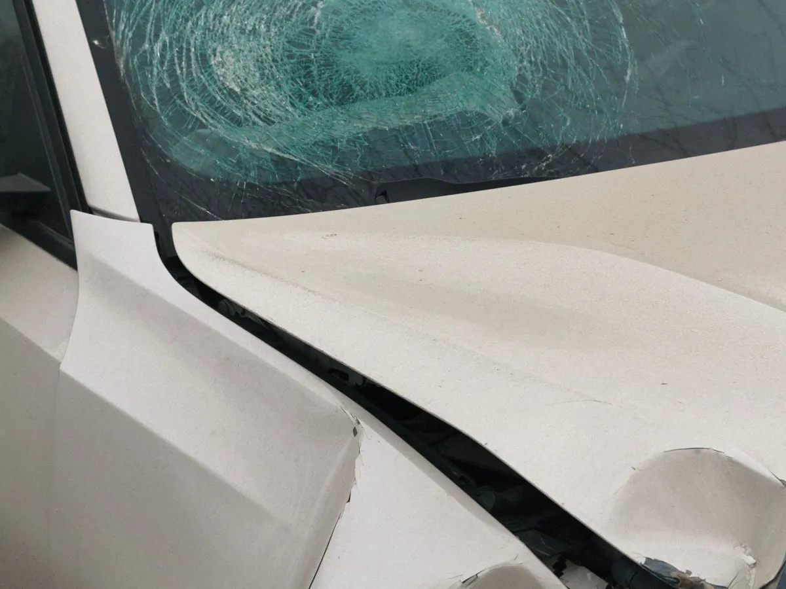

Call (817) 769-3783 or send the form below for a free auto glass quote anywhere in Fort Worth.
Phone: (817) 769-3783
Hours: Monday to Friday, 8am to 6pm
Service office: 702 Houston St Suite 5, Fort Worth, TX 76102
The address above is a service office, not a storefront. We do every windshield and window job in Fort Worth at your location.
Downtown Fort Worth, Near Southside, Arlington Heights, TCU & Westcliff, Alliance & Keller, Benbrook, Saginaw, Haltom City, North Richland Hills, White Settlement, Burleson, Crowley, plus the rest of Fort Worth and nearby Tarrant County.

The first question we ask is “What year, make and model?” Then we’ll ask where the damage is and how big it is. A photo from your phone helps a lot.
From there you get a free quote for your Fort Worth auto glass job, an honest answer on repair versus replacement, and the earliest time we can come out. If you’re going through insurance, have your policy number handy.
Prefer to read first? Look over our auto glass services in Fort Worth.
Call now for a free quote on any windshield or window.
Call (817) 769-3783 for a Free Quote